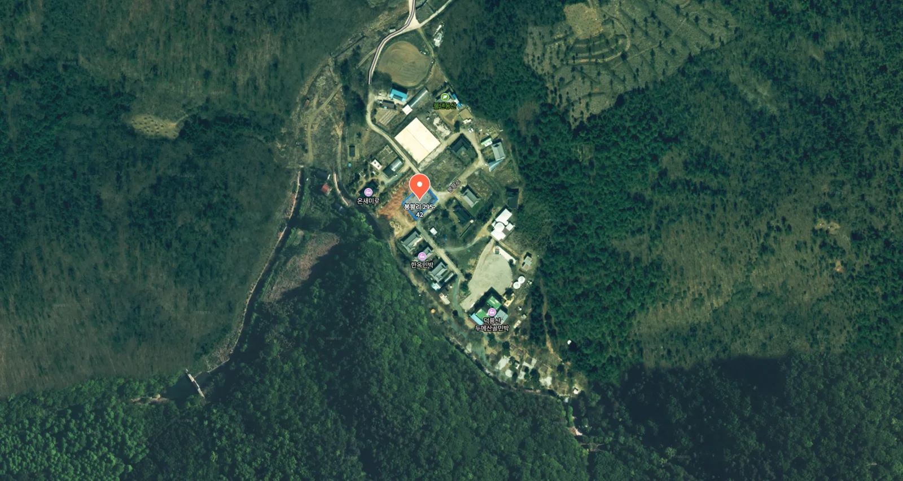
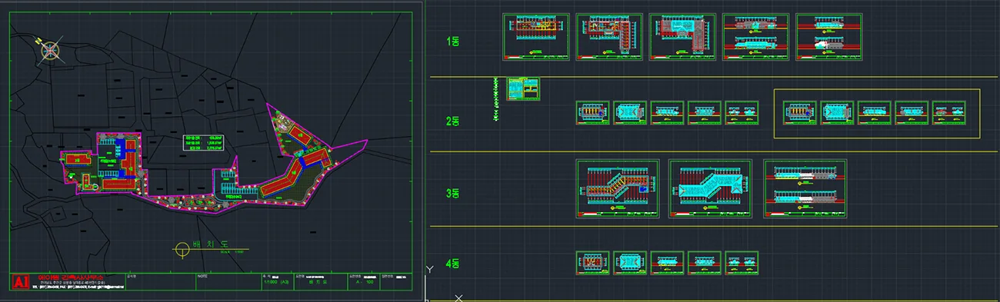
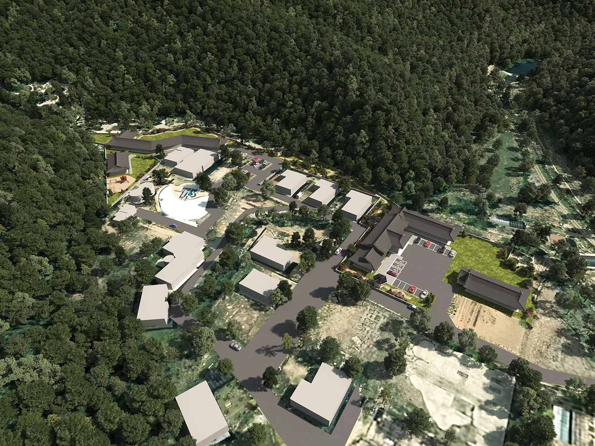
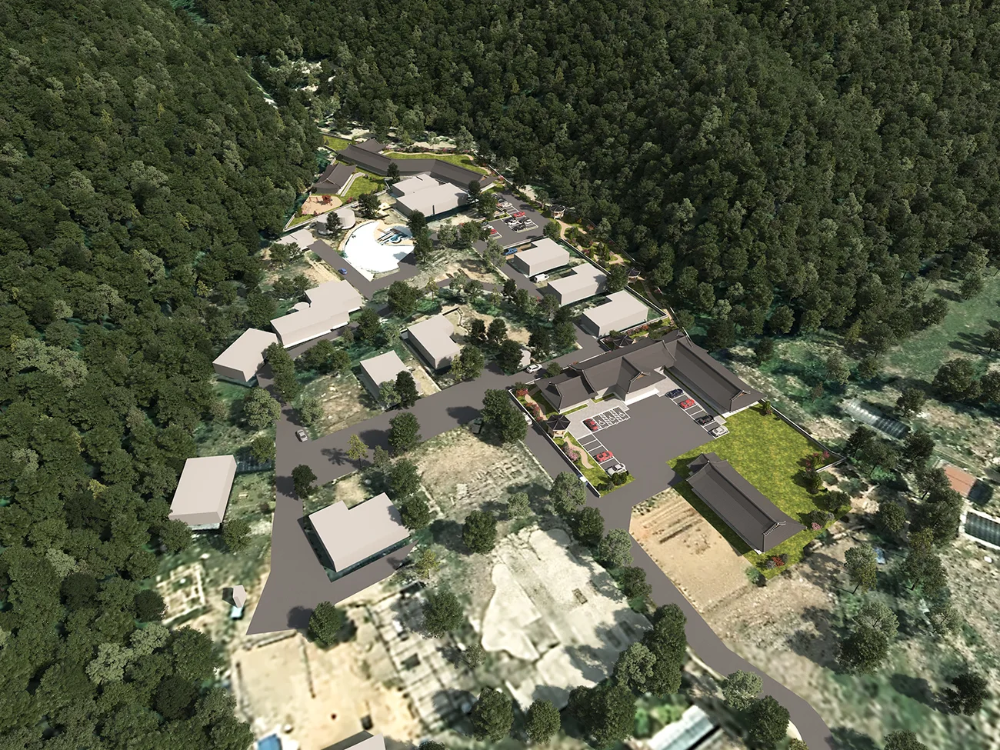
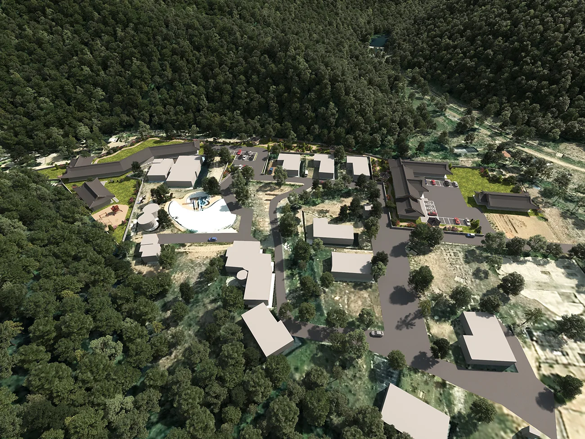

프로젝트 소개
전라남도 강진군 도암면 봉황리 295-42에 위치할 예정으로 한옥 호텔 부지 조성 사업의 조감도 제작을 진행하였습니다.
전통의 미와 현대 관광 트렌드가 조화를 이루는 한옥 호텔은 단순한 숙소를 넘어 지역 관광 자산 으로서의 가치를 갖고 있으며, 저희는 이 가치를 시각적으로 표현하고자 이번 조감도를 기획 및 제작하게 되었습니다.
사업대상지: 전라남도 강진군 도암면 봉황리 295-42 https://naver.me/FqZSRMYC

해당 부지는 강진의 아름다운 자연과 고요한 농촌 경관 속에 자리하고 있어, 한옥 호텔 이라는 전통 기반 공간이 조성되기에 매우 적합한 입지입니다.
프로젝트 개요
이번 조감도 제작은 단순히 건물 형태를 시각화하는 데 그치지 않고,
지역 자원의 활용, 체류형 관광 콘텐츠 구성, 한옥 특유의 건축미 표현 등
다양한 개발 방향성과 분위기를 함께 전달하는 데 중점을 두었습니다.
프로젝트의 진행과정
1. 기초 자료 수신 및 분석
우선 클라이언트로부터 제공받은 기본 도면 및 개발 계획안을 바탕으로
호텔 건물의 배치, 부지 활용 계획, 주요 진입동선 등을 파악했습니다.
또한 지적 정보와 위성지도, 주변 환경 데이터를 반영하여 부지 외곽까지 입체적으로 구성될 수 있도록 계획을 수립했습니다.

2. 모델링 및 앵글 선정
도면 기반으로 한옥 호텔의 구조 및 부지 전체의 3D 모델링을 진행한 후,
여러 각도에서 테스트 렌더링을 거쳐 **조감도에 가장 적합한 뷰(View)**를 선정합니다.
주요 요소: 진입도로, 호텔 진입구, 야외 정원, 포토존, 체험 공간
분위기: 전통미 강조 + 휴식과 힐링을 암시하는 자연 친화적 톤



3. 최종 렌더링 및 결과물 제작
선정된 각도를 기반으로 조감도에 사용될 최종 색감, 조명, 분위기 연출 작업을 진행합니다.
이 단계에서는 하늘, 조경, 주변 산지, 논밭 등 현장 분위기를 최대한 사실적으로 표현하여,
관계자들이 실제로 현장에 와 있는 듯한 몰입감을 느낄 수 있도록 구성합니다.
결과물

조감도를 통해 한눈에 들어오는 호텔 배치, 전통미를 살린 지붕선,
그리고 전체 공간이 자연과 어우러지는 조화로운 느낌을 충분히 전달드릴 수 있었습니다.
마치며
한옥 호텔은 단순한 숙박 공간이 아닙니다.
그 자체로 ‘경험’이자 ‘여행의 목적지’가 되는 콘텐츠입니다.
이번 프로젝트에서는 그 첫걸음인 시각화 작업,
즉 ‘이곳에 이런 공간이 생긴다면 어떤 모습일까’를 명확하게 제시하는 작업을 맡아 진행했습니다.
한옥 호텔 조감도 및 공간 기획 제안 시각화가 필요하시다면,
언제든지 메이크 그룹으로 문의 주세요.
귀하의 공간에 가장 잘 어울리는 이미지로 구현해드리겠습니다.
이상 메이크 그룹이였습니다. 감사합니다.
CONTACT
TEL : 070-4127-5640